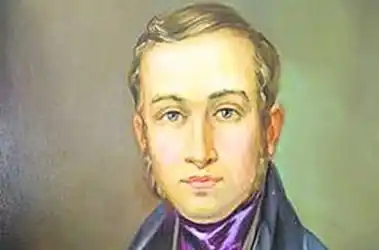

Євген Павлович ГРЕБІНКА
(1812 — 1848)
Євген Павлович Гребінка народився 2 лютого 1812р. у сім'ї дрібного поміщика на хуторі Убіжище поблизу Пирятина на Полтавщині. Початкову освіту Гребінка здобув удома від приватних учителів, згодом учився в Ніжинській гімназії вищих наук (1825 — 1831); тут почалася його літературна діяльність. Значний вплив на формування Гребінки як майбутнього письменника мала його активна участь у літературному житті гімназичної молоді. У літературному гуртку жваво обговорювалися літературні новини, твори Радищева, Пушкіна, Рилєєва, перші спроби пера гімназистів, що вміщувалися в рукописних альманахах. Один з них виходив за участю Гребінки, в кожному щотижневому номері якого, за свідченням сучасників, з'являлися його твори, "переважно сатиричні". Згодом він став основним співробітником рукописного журналу "Аматузія". Після закінчення гімназії та короткочасної служби в резервах 8-го Малоросійського козачого полку Гребінка повертається до рідного хутора Убіжище на Полтавщині і періодично займається літературною працею (у цей час з'являються друком його окремі байки, уривки з перекладу "Полтави" Пушкіна). У 1834р. Гребінка переїжджає до Петербурга, де зав'язує широкі знайомства з літераторами й діячами російської культури, зокрема Пушкіним, Криловим, Тургенєвим, Брюлловим, відвідує літературні салони і влаштовує літературні вечори в себе вдома. Разом з тим він домагається прихильності М. Греча, графа Хвостова та інших високопоставлених осіб, завдяки яким займає непогані посади на цивільній службі, друкується в столичних журналах. У Петербурзі Гребінка розгортає жваву літературну діяльність, систематично виступає із своїми творами на сторінках "Современника", "Отечественных записок", "Литературной газеты", "Утренней зари" та ін. Велику роль відіграв Гребінка в житті, творчому становленні Т. Шевченка, з яким познайомився у другій половині 1836р. Він брав безпосередню участь у викупі його з кріпацької неволі. На літературних вечорах у Гребінки Шевченко дізнається про новини тогочасного російського й українського літературного життя, зближується з багатьма прогресивними діячами російської культури, зокрема майбутніми петрашевцями М. Момбеллі та О. Пальмом. Особлива заслуга Гребінки в тому, що в 1840р. з його допомогою побачив світ "Кобзар" Шевченка. З кінця 30-х рр. Гребінка виступає як невтомний організатор українських літературних сил. Так, за його участю в 1841р. виходить альманах "Ластівка", на сторінках якого були опубліковані твори Шевченка, Котляревського, Квітки-Основ'яненка, Боровиковського, Забіли та інших авторів, добірка українських народних пісень і приказок. Тут же було вміщено два напівбелетристичних нариси Гребінки — передмова "Так собі до земляків" і післямова "До зобачення". Найпомітнішим твором молодого Гребінки, над яким він почав працювати ще в Ніжині, є переклад українською мовою "Полтави" Пушкіна (Петербург, 1836). Свій переклад Гребінка назвав "вільним"; це виявилося, зокрема, у багатьох відхиленнях від оригіналу, введенні нових сцен, деяких подробиць, у трактуванні окремих образів тощо. Гребінці належить також кілька українських ліричних поезій, що виникли на грунті народної творчості ("Човен" (1833), "Українська мелодія", "Заквітчалася дівчина...", "Маруся" та ін.). Найвизначніше місце в художньому доробку Гребінки українською мовою посідають байки. Славу йому як байкареві принесли "Малороссийские приказки", що з'явились окремими виданнями у Петербурзі в 1834 і 1836 рр. Байки Гребінки органічно пов'язані з народними приказками і прислів'ями, не випадково він називає свої твори "приказками", побудованими за принципом розгортання й конкретизації фольклорних прислів'їв (в основі байки "Верша та Болото" — мотив народного прислів'я "Насміялася верша з болота, аж і сама в болоті"; повчання байки "Школяр Денис" взято з прислів'я "Пани б'ються, а в мужиків чуби тріщать" тощо). В окремих з байок поет творчо використав традиційні мотиви, опрацьовані ще античними авторами та їх багатьма послідовниками. Приміром, в основу "Могилиних родин" покладено чотирирядкову притчу "Гора-породілля" Федра. Мотиви творів І. Крилова своєрідно, на іншому життєвому матеріалі, іншими художніми засобами оброблені в таких байках Гребінки, як "Рибалка" ("Селяни і Ріка"), "Ведмежий суд" ("Селянин і Вівця"), "Грішник" ("Троєженець") та ін. Крім традиційних персонажів, що уособлюють людські якості, у байці, як правило, є ще одна дійова особа — оповідач — тлумач смислу байки, її морального висновку ("Ведмежий суд", "Рибалка", "Будяк да Коноплиночка" та ін.). Багато байок Гребінки побудовано у формі монологів ("Пшениця", "Маківка", "Школяр Денис"). Окремі байки українського поета — це суцільні діалоги, що нагадують невеличкі п'єси (приміром, "Ячмінь"), проте й у них присутність автора-оповідача, точніше, його ставлення до зображуваного виявляється досить виразно. Поетичний доробок Гребінки російською мовою значно ширший за обсягом і тематикою, ніж українською. Його російські вірші переважно романтичні ("Печаль", "Скала"); широкою популярністю користувалися свого часу романс Гребінки "Черные очи" ("Очи черные, очи страстные.."), вірш "Почтальон", "Песня" ("Молода еще девица я была...") та ін. Переспівами українських народних пісень були поезії "Казак на чужбине (Украинская мелодия)", "Кукушка (Украинская мелодия)", "Украинская мелодия" ("Не калина ль в темном лесе...") та ін. Історичному минулому України присвячені вірші "Курган", "Нежин-озеро", "Украинский бард" і поема "Богдан" (1843), написані на основі народних переказів. Популярність Гребінці як прозаїку принесла збірка "Рассказы пирятинца" (1837) та інші ранні твори, написані переважно в романтичному дусі за фольклорними мотивами — українськими народними легендами, казками, переказами. З українською тематикою пов'язані також повість "Нежинский полковник Золотаренко" (1842) (в основу повісті покладені історичні події, що відбувалися одразу після возз'єднання України з Росією) та роман "Чайковский" (1843), що є одним із значних досягнень Гребінки-прозаїка. Якщо твори Гребінки 30-х — початку 40-х рр. мали загалом романтичний характер, то ряд інших повістей й оповідань. цього і пізнішого часу відзначається реалістичною спрямованістю. 1840р. — повість "Кулик", написана в дусі естетики натуральної школи. 1841р. — "Записки студента", написані у формі щоденника і присвячені темі "маленької людини" (ця ж тема порушується у романі "Доктор"). 1847р. — надрукована одна з останніх повістей Гребінки — "Приключения синей ассигнации". В цей період з’явилися також повісти "Лука Прохорович", "Верное лекарство", "Сила Кондратьев" (надрукована в "Современнике"), кілька фізіологічних нарисів: "Петербургская сторона", "Провинциал в столице", "Хвастун" та ін.